PP Fragment
A New 【Free to Try】 Font
by Francesca Bolognini & Mathieu Desjardins
Available exclusively at
pangrampangram.com
PP Fragment is born from vintage lettering and signs, bridging 19th-century letterforms and contemporary typography ✳ Pangram Pangram’s 35th release uses the latest technology.
Gracefully oscillating between an elegant, highly contrasted Serif face, a revival mid-serif called Glare, and a strong Sans, each with distinct features yet perfectly complementary.

- Styles
- 4 Cuts x 9 Styles with 581 Glyphs each
- Designers
- Francesca Bolognini Mat Desjardins
- Release Date
- June 2022
- Version
- 1.00
- Available Formats
- OTF, TTF, WOFF, WOFF2, EOT
It comes in 4 preset cuts, Sans, Serif, Glare, and Text, each with unique personalities and quirks. Each weight counts 581 glyphs with plenty of alternate symbols to achieve the best-desired result for your next design.
Its power and versatility also comes from its 32 very distinct and unique weights! These weights were carefully crafted and cut for maximum breath of ability ▲ PP Fragment doesn’t disappoint and will surely be one of your best tools in your next design endeavour.
READ THE INTERVIEW ON PP® FOUNDRY READ THE INTERVIEW ON PP® FOUNDRY 

 v
v